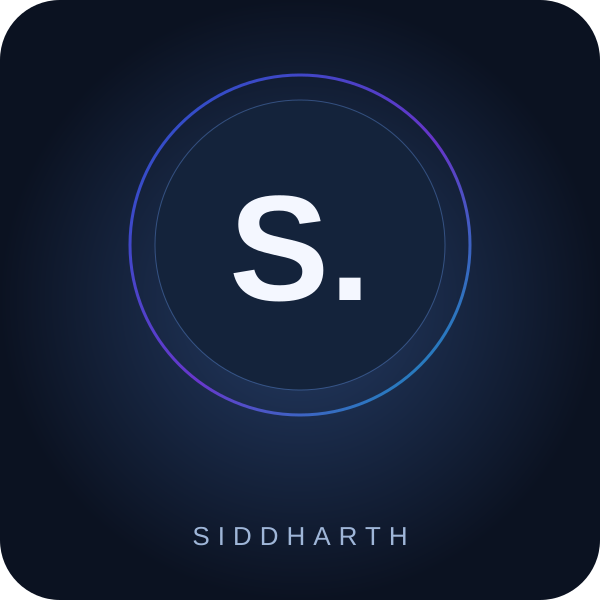

Technology
AI, ML, software and automation.
HELLO, I'M
I'm an AI & Machine Learning student who enjoys building useful software, exploring intelligent automation, and creating visual stories through photography and video editing.

01 / A LITTLE ABOUT ME
I like turning ideas into things people can use, experience and remember.
I'm pursuing a B.E. in Artificial Intelligence and Machine Learning. My interests sit at the intersection of software, data and creativity. I enjoy learning by building, experimenting with new tools, and improving one project at a time.
Outside the code editor, I explore photography and video editing — capturing moments and shaping them into visual stories.
AI, ML, software and automation.
Photography, video editing and storytelling.
Learning, experimenting and building consistently.
02 / WHAT I WORK WITH
A snapshot of the technologies and creative areas I'm learning and using. This list should reflect your current, demonstrable skills.
03 / SELECTED WORK
A travel-focused application concept. Add your actual features, screenshots, technology stack and repository link here.
View repository ↗Document your algorithms, datasets, experiments and evaluation results here.
View repository ↗Replace this card with a completed project that best demonstrates your problem-solving and engineering skills.
Browse all repositories ↗Project descriptions are starter copy. Update them to match what each repository genuinely does before publishing.
04 / BEYOND THE SCREEN
I also enjoy photography and video editing — exploring composition, colour, rhythm and the small details that make a moment memorable.
Add your own photographs or video-editing stills as backgrounds to these cards when ready.
05 / HAVE AN IDEA?
Open to learning opportunities, project collaborations and creative conversations.